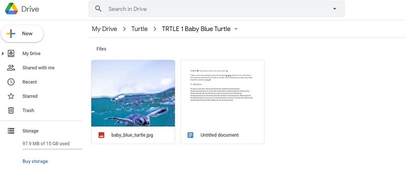

In this project I had to implement Google Drive file navigation, authentication, and uploading and downloading.
I also created a serialized history and used the Windows Task Scheduler run the script.
The first version of the program did not utilize the Drive API, and combined random captions with random pictures.
The problem with that was that it could sometimes produce awkward results depending on the contrast between the chosen image and the chosen caption.
At that point, I knew I had to redesign the program.
This time around, I decided that the posts needed to be pre-curated.
I also wanted the posts to exist on the cloud, so if something went wrong with my computer I wouldn't have to make a new set from scratch.
After a bit of research I found out about the Drive API, which would allow me to access files from my google drive account using Python.
I made a Google Drive account containing folders that each hold an image file and a Google Doc containing a caption.
This is what one of the Google Drive Folders looks like.

The most difficult aspect of this project was learning how to use the Drive API.
While the documentation for it is pretty good, certain features are not designed in the way that I would have expected.
The primary example would be file navigation. Programming libraries for file navigation normally work off of folders/directories.
If I wanted to access a text document on my computer's desktop, the directory for that would be something like "C:\Desktop\filename.txt".
I could easily just tell Python to look in an exact location for a specific file.
The Google Drive API is nowhere near that straightforward.
Instead, you have to repeatedly search through the database for data matching certain characteristics.
Here are some examples; Note that these do not perform the search, these are used as just one component of the search command.
Notice that even if you know exactly where an item is, you must still perform a search to get to it.
If you wanted to retrieve an image within a specific folder, you would have to perform the above search to get the folder ID, then perform ANOTHER search restricted to that folder ID to find the image.
For this project, I wanted to alternate between a generic post of a sea turtle, and a post advertising a product.
To do this, I made a super simple "history" class that would be serialized (saved in a file) after each run.
Below you can see the default history class.
The variable 'post_type' switches between True (turtle post) and False (product post).
The variables 'turtle_history' and 'product_history' represent post number 'x' in the turtle or product folder (currently 20 posts each).
They are incremented before each use, so on the first run It will prepare turtle post number 1.
In conclusion, the most challening thing about this project was taking the time to learn to use the tools I decided to work with, primarily the Google Drive API.
I had to spend a lot of time reading and re-reading the documentation and experimenting with the API in order to learn how to authenticate, navigate files, and upload/download files.
If you'd like to see more of this code check it out on Github here.